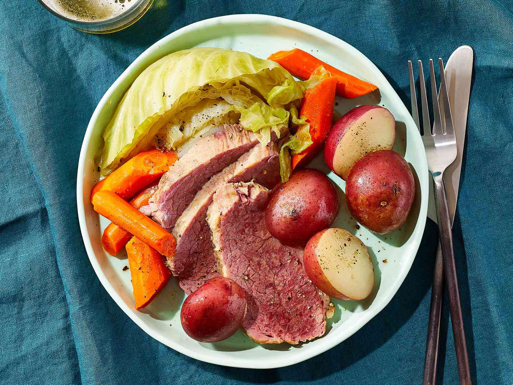

Boiled Dinner

Ingredients
- 1 (5 1/2 pound) corned beef brisket
- 2 large onions
- 10 carrots, cut into 1 inch pieces
- 2 heads cabbage, cored and cut into wedges
- 15 small white (Irish) potatoes
Steps
- Rinse brisket under cold water and place in a large pot. Add enough water to cover roast by 6 inches. Peel onions and place them in the pot. Bring to a boil; cook for about 30 minutes at a rolling boil. Reduce heat to medium-low, so water is at a gentle boil. Cover and cook for 3 1/2 hours.
- Remove onions and cut them into wedges. Return them to the pot. Add carrots to the pot, then place cabbage over roast. Place potatoes on top of cabbage. Cover and cook until potatoes are tender, about 30 minutes more. The potatoes should be immersed in the water by now, but if not, keep the lid on so they can steam.
- Remove vegetables from the pot and place in a separate serving bowl. Keep corned beef in the pot until ready to slice and serve because it dries out quickly.
>>back